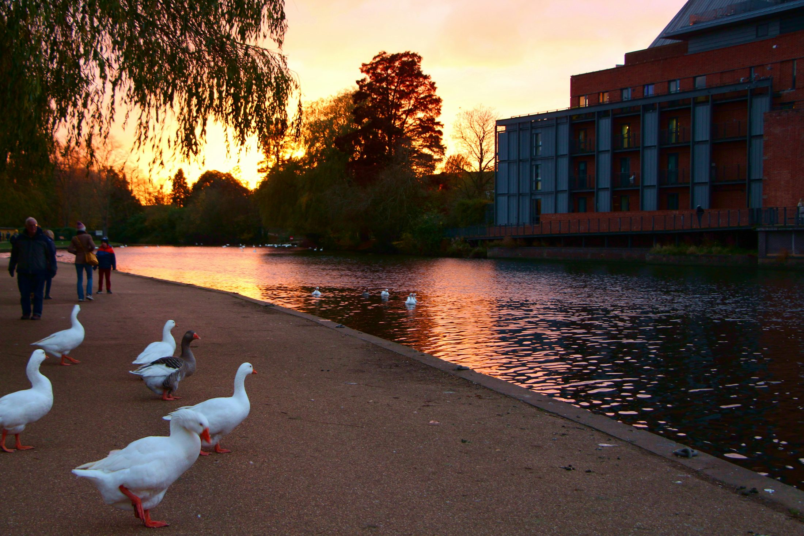
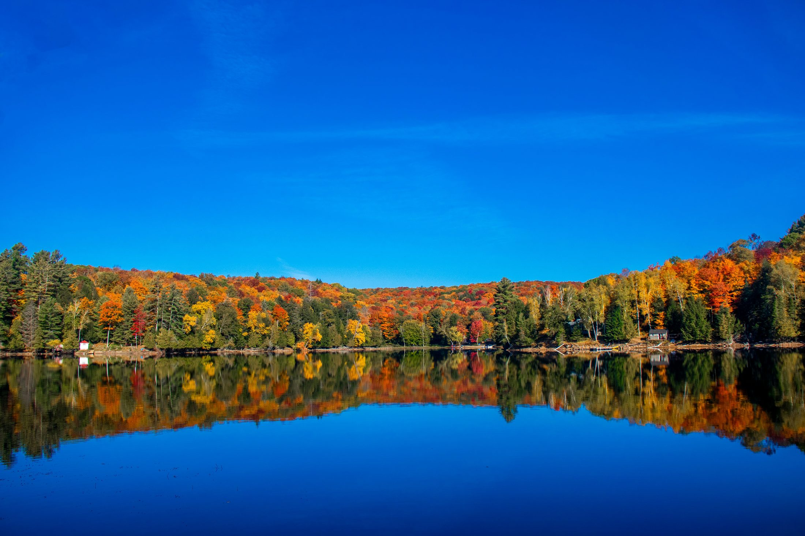
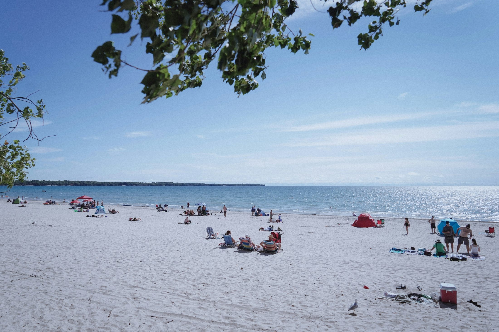
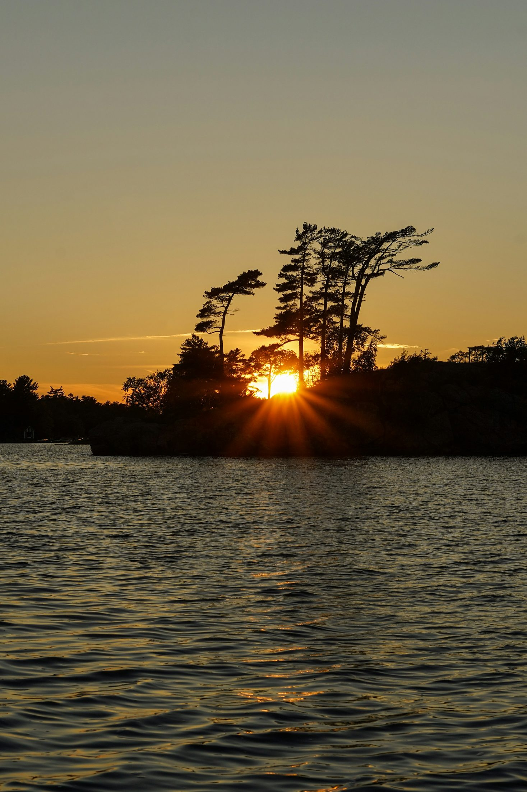

All Places
A clean library of flagship destinations and hidden gems. Start here when you know you want to go somewhere, but not exactly where.
Places That Don’t Feel Real
Quiet, dramatic, strange, romantic, or breathtaking places that are often missed by generic Ontario travel lists.

Torrance Barrens Dark-Sky Preserve
A moonlike Canadian Shield landscape where the real show begins after sunset.

Lion's Head Lookout
A Georgian Bay cliff view that feels too dramatic to be only a few hours from home.

Rock Dunder Nature Reserve
A short hike with a summit view that feels like the edge of a northern lake country dream.

Silent Lake Provincial Park
No motorboats. No performance. Just water, forest, quiet, and the rare luxury of stillness.

Indian Head Cove
Flat limestone, white rock, and water so blue it barely feels like Ontario.

Dundas Peak
A dramatic escarpment overlook with one of the most powerful valley views near the GTA.

Eugenia Falls
A 30-metre escarpment waterfall tucked into a tiny village and deep green valley.

Warsaw Caves Conservation Area
Seven caves, forest trails, kettles, river scenery, and a surprisingly adventurous day trip.

High Falls Trail, Algonquin
A quieter Algonquin-side waterfall walk with forest, river, rapids, and a wild edge.

Mono Cliffs Provincial Park
Escarpment cliffs, quiet forest, boardwalks, and one of the best fall day trips close to the GTA.

Westport & Rideau Lakes
A tiny lakeside village that feels slower, older, and more peaceful than most Ontario day trips.
Every destination now has a specific planning layer
Aman’s note, honest perfect-for tags, best time to visit, future memories, photo locations, practical checks, and action links — so the pages feel less like templates and more like real trip plans.
All destination guides

Tobermory & Bruce Peninsula
The Grotto, Flowerpot Island, Singing Sands, turquoise water.

Dorcas Bay & Singing Sands
A calmer Bruce Peninsula beach and boardwalk experience.

Muskoka Cottage Country
Lakes, cottages, docks, fall colours, and classic Canada.

Elora Gorge Village
Stone village, gorge views, spa, and a romantic overnight.

Prince Edward County
Sandbanks, wineries, small towns, and summer weekends.

Algonquin Park
Fall colours, canoe routes, winter trails, and wilderness.

Niagara-on-the-Lake
Historic downtown, wineries, lakefront walks, and romance.

Stratford
Theatre, Avon River, restaurants, and boutique weekend energy.

Haliburton Highlands
Quiet lakes, cabins, forest roads, and winter calm.

Collingwood / Blue Mountain
Village, Georgian Bay, winter weekends, and scenic lookouts.

Paris, Ontario
Cobblestone town, Grand River, cafes, and easy day trip energy.
Creemore
Tiny village, brewery stop, fall drive, and quiet main street.
Westport / Rideau Lakes
Lakeside village, kayaking, and slow small-town escape.
Dundas Waterfalls
Tews Falls, Webster’s Falls, and gorge-side scenery.

Sandbanks Dunes
Freshwater dunes, beaches, shallow water, and PEC add-ons.

Torrance Barrens
Dark-sky stargazing and one of Ontario’s most romantic night trips.
Bonnechere Caves
Ancient caves and a unique summer road-trip stop.
Mono Cliffs
Escarpment cliffs, forest trails, and fall colour close to the GTA.
Devil’s Glen
Quiet gorge hike near Collingwood and Blue Mountain.